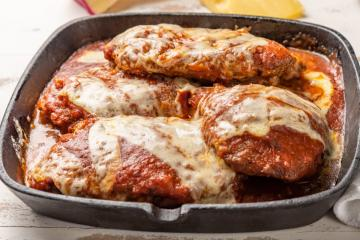

Receita de Parmegiana

Sobre o prato:
Parmegiana é simplesmente o prato mais cria do Planeta Terra, extremamente saboroso e muito fácil de fazer.
Ingredientes:
- 2 bifes de filé mignon
- 4 fatias de muçarela
- 1 ovo não estragado
- muita vontade
Passos:
- Primeiro, aqueça o forno a 1000 graus
- Pegue os bifes, enrole na muçarela, quebra o ovo em cima e joga no forno
- Após 5 minutos estará tudo derretido mt delicia
- Agora é só comer